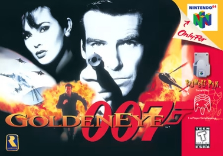
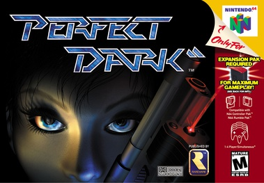
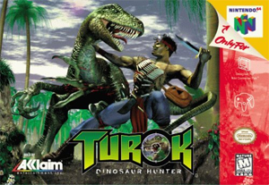
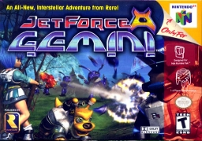
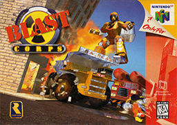
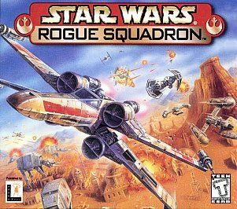
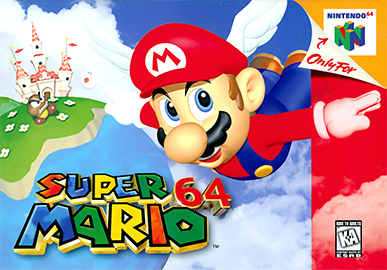
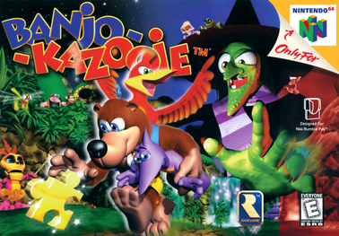
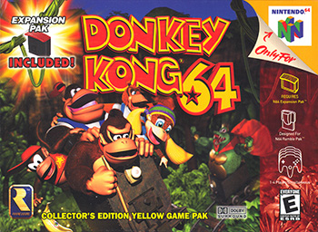
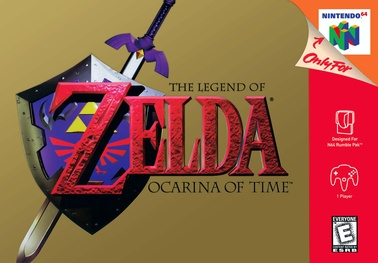
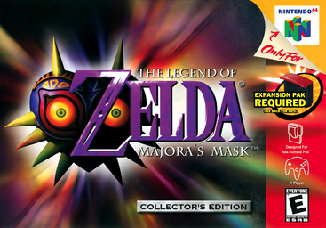
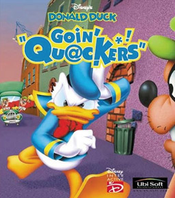
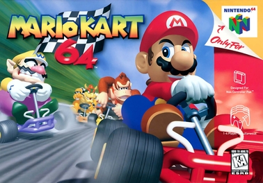
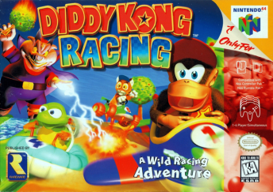
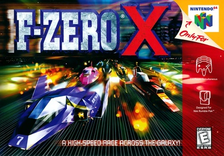
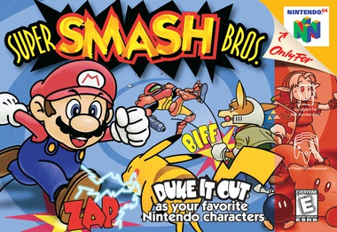
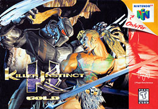
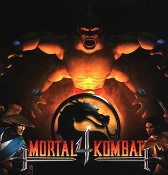
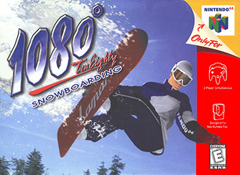
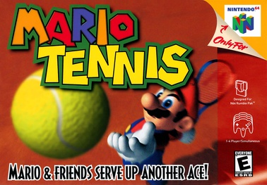
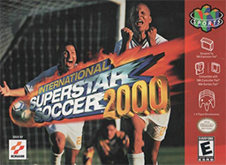
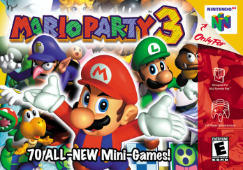
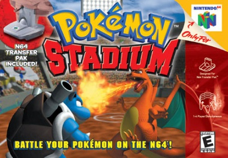
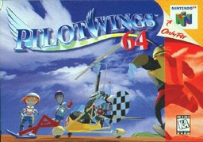
El gris clasico. La referencia. Ahi empezo todo.
Edicion dorada de coleccionista, una pieza de orgullo de la coleccion.
Azul + amarillo con Pikachu en relieve. La edicion Pokemon de la N64.
Linea Funtastic 2000. Plastico semi-transparente naranja fuego.
Morado uva translucido, de la linea Funtastic 2000.
Azul translucido. Completa el trio Funtastic principal del estudio.
cartuchos en la coleccion
generos cubiertos
destacadas en gameplay
variantes en el estudio
9 juegos de la coleccion